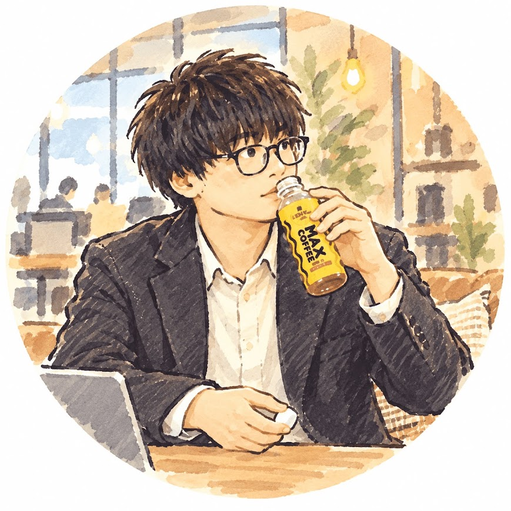

作者
yuki
Hogeshyを制作しているyukiです。
ウェブ解析士の資格を保有し、福岡県を拠点に活動しています。
ウェブ解析士は、ウェブ解析ツールのデータやレポートを読み取り、正しい判断ができる人材を目指す資格です。
猫が好きで、特にマンチカンが可愛くてお気に入り。
猫の少しツンデレなところや、ちょこちょこ歩く姿、ご飯を食べている姿が好きです。
猫カフェMochaに行ったり、猫の動画を見たりしながら、日々癒やされています。
猫のように、何もしない時間も好きです。
頑張ることにも、癒やされることにもちょっと疲れたとき、何もしなくていい時間を一緒に過ごせるものを、絵や物語、日記、音楽にしています。
Hogeshyは、仕事を休んでいた頃に生まれました。
正直に言うと、まだ自分ひとりの技術だけでは、頭の中にあるイメージや気持ちを十分に形にできません。
だから、さまざまな表現ができるAIの力を借りています。
自分ひとりでは形にできなかった気持ちも、AIを使うことで、絵や物語として少しずつ表現できるようになりました。
AIにすべてを任せているわけではありません。
Hogeshyの表情や姿、置かれる場所、作品に込める気持ちは、自分で考えています。
今できる方法を使って、自分の中にあるものを表現し、同じような気持ちを抱えている人に届けたいと思っています。
空っぽな気持ちや、身体から力が抜けたような感覚を、大好きな猫の姿に重ねました。
答えを出すためではなく、ただ静かにそばにいるために。
これからは、ひとりでも多くの方にHogeshyを知ってもらえる活動をしつつ、LINEスタンプや絵本、ポストカードなども作っていきたいと考えています。